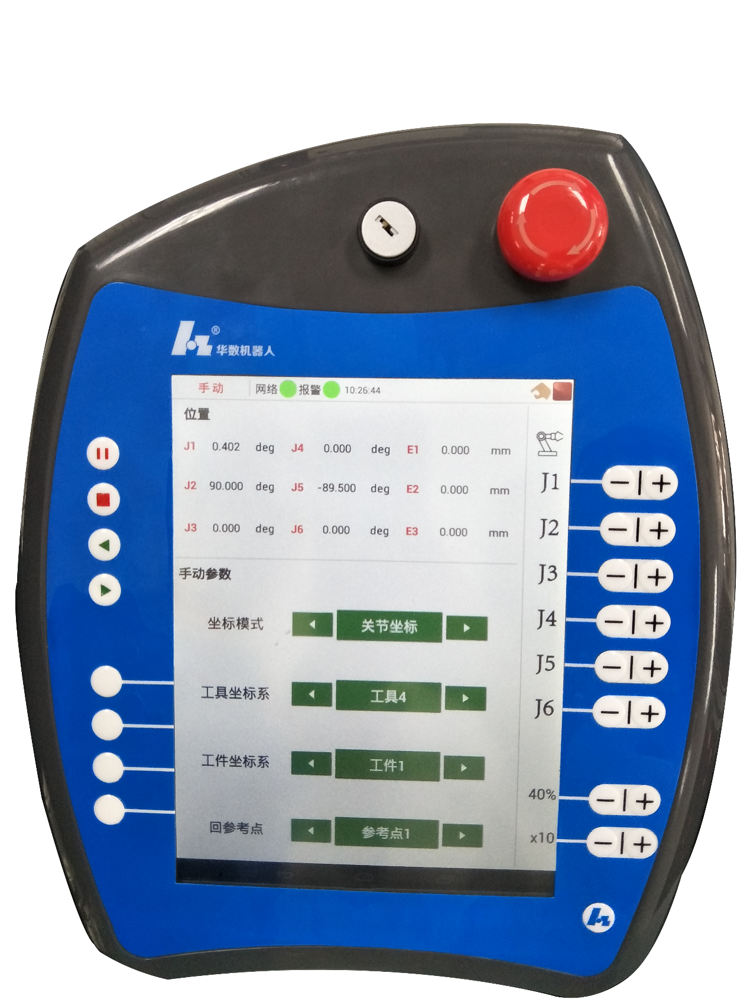
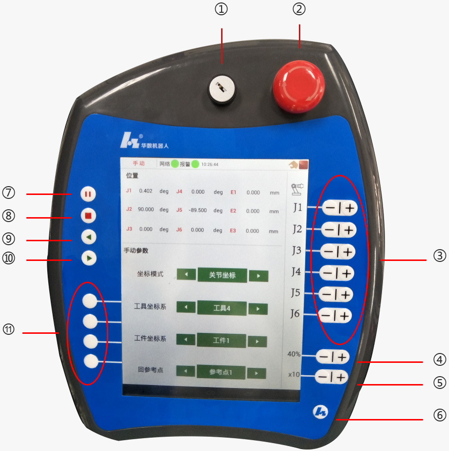
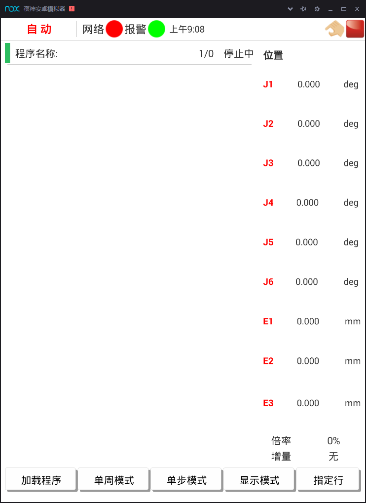
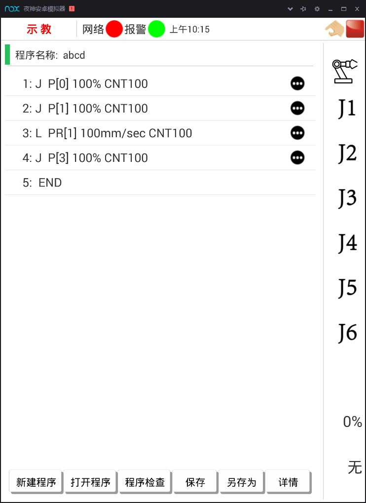
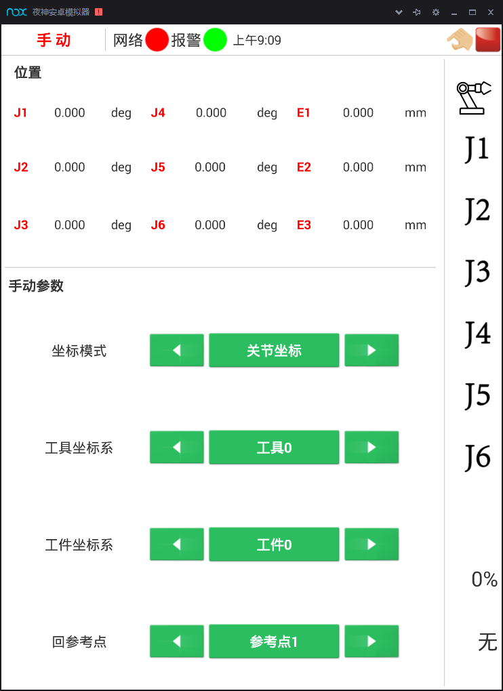
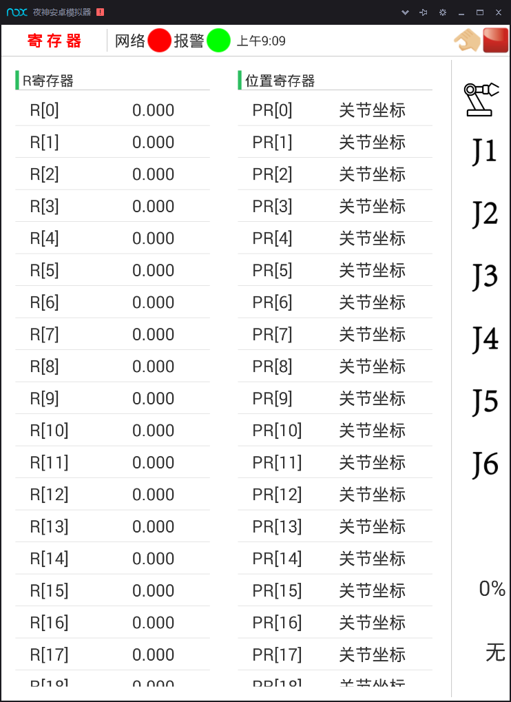
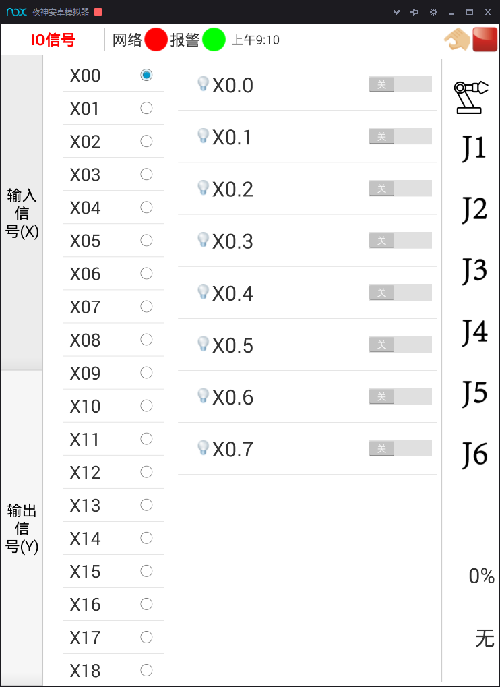
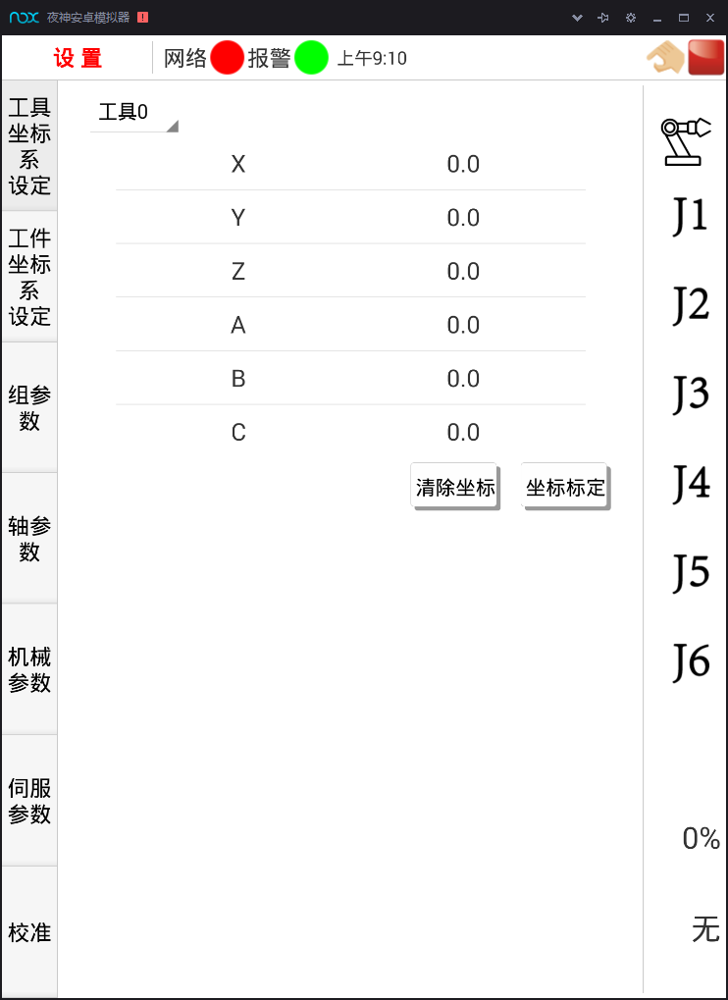
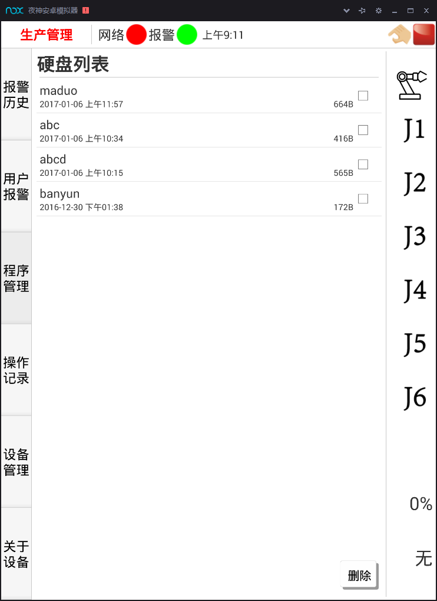

1.1了解工业机器人
1.1.7 示教器基本功能与操作
示教器主要由液晶屏和操作键组成。示教——再现型机器人的所有操作基本上通过示教器来完成的，所以掌握各个按键的功能和操作方法是使用示教器操作机器人的首要前提。

图1-7 HSR-612工业机器人示教器按键配置图
1、示教器按键名称及功能说明
表1-2 示教器按键名称及功能说明
| 编号 | 功能 |
|---|---|
| 1 | 暂未定义。 |
| 2 | 急停按钮，用于紧急停机。 |
| 3 | 轴控制按键。用于手动移动机器人。 |
| 4 | 倍率调节按钮。用于调节机器人运动快慢。 |
| 5 | 增量调节按钮。用于调节增量模式下机器人运动快慢。 |
| 6 | 主页键。用于调用窗口快捷菜单。 |
| 7 | 暂停键。用于暂停运行程序。 |
| 8 | 停止键。用于停止运行程序。 |
| 9 | 暂未定义。 |
| 10 | 启动键。用于启动运行程序。 |
| 11 | 暂未定义。 |

2、示教器菜单及窗口
（1）自动运行界面

图1-8 自动运行界面
在自动操作模式下可以运行机器人程序，任何程序都必须先加载到内存中才能运行。
（2）示教界面

图1-9 示教界面
示教主要提供程序修改编辑功能。
（3）手动运行界面

图1-10 手动运行界面
手动运行界面是机器人控制统的主窗口界面，主要用于显示和设置当前组号、运行模式、坐标系等，用户可以在此界面中查看当前的状态信息，并进行设置。此界面分为两部分，上半部分用于显示坐标位置和控制轴的运转，通过点动模式控制机器人运转。下半部分用于显示关键信息，点击相应按钮，即可对指定的信息进行设置和操作。
（4）寄存器界面

图1-11 寄存器界面
寄存器分为R寄存器和位置寄存器。控制系统支持200个R寄存器变量，寄存器从0开始编号，可以设置R寄存器的值。位置寄存器作为全局变量，用于存放位置信息。机器人控制系统支持100个位置寄存器，寄存器号从0开始编号。支持对指定位置寄存器的坐标类型、组和坐标值进行设置修改。
（5）I/O信号界面

图1-12 输入/输出界面
机器人控制系统提供了完备的I/O通信接口，可以方便地与周边设备进行通信。本系统的I/O板提供的常用信号处理有输入信号X和输出信号Y。输入/输出主要是对这些输入/输出状态进行管理和设置。
（6）参数设置界面

图1-13 参数设置界面
实现对机器人控制系统的设置，包括权限、参数、工具/工件坐标系及系统日期等。
其中参数包括系统参数、组参数和轴参数。本系统支持5个控制组，最多32个物理轴。组参数与轴参数相互关联，每个组最多可以配置9个逻辑轴。用户可根据需要设置物理轴与逻辑轴之间的映射关系，详见组参数设置详细信息。
注意，每个物理轴只能对应一个组的一个逻辑轴，不能进行多重映射。配置好的物理轴可以在轴参数列表中查看该轴所属控制组情况。
（7）生产管理界面

图1-14 生产管理界面
该界面主要显示与生产相关的一些信息，如软件版本、使用期限、操作人员、以及当前连接的网络状态，报警历史和操作记录。